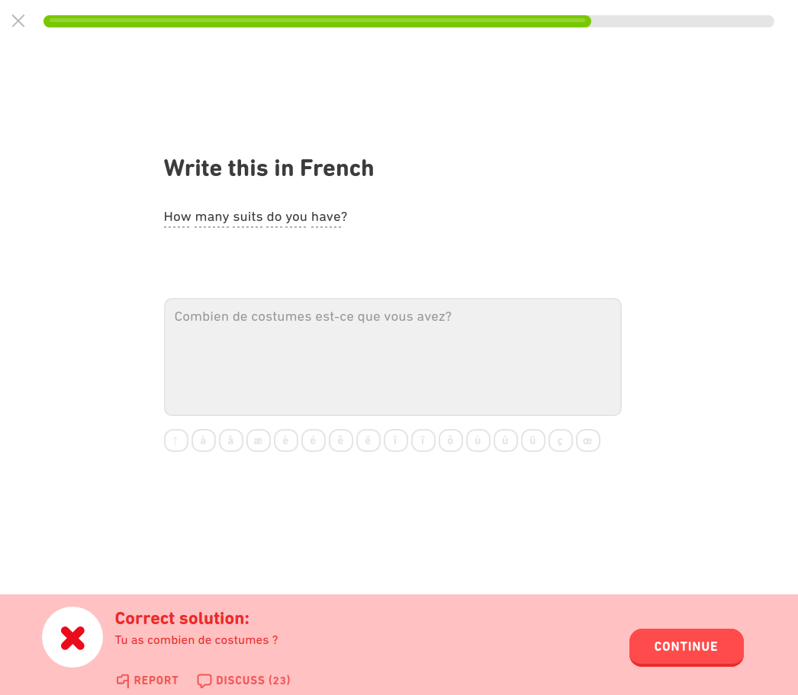
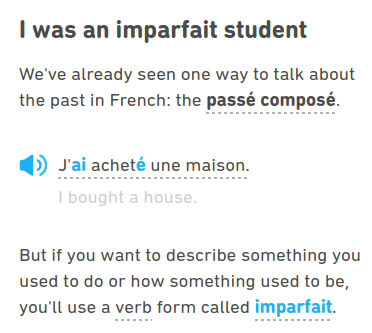

I've been doing Duolingo French for 150 days! I have some thoughts about it. Well, criticisms mostly…
My partner is French, and since we've started living together I've decided I should probably learn French. Since I don't have a lot of money lying around to pay a tutor or else pay for overpriced lessons, I've been using Duolingo as my main way of learning French. I've just reached a 150-day streak on the app, and as such I thought I'd write up some thoughts about using it and some of the issues I have with it.
Overall, my experience with Duolingo has been mediocre at best. While Duolingo is a good resource, since it can be used free, and has definitely helped me learn French in the absence of a human teacher, the more time I spend with it the more frustrating I find it.
The following are my main criticisms:
First, I should point out that I came to Duolingo French with some previous experience having learned other Romance languages in a more traditional way. I learned Spanish in high school and college and can speak it fairly competently. I also took some Brazilian Portuguese in college and can speak it to some degree, too (though my comprehension of the spoken language is not great).
This starts me off with some advantage: Spanish and Portuguese are very closely related to French. They share a great deal of vocabulary with French as well as grammatical constructions that are not found in English that I'm already familiar with. This means that when I see things in French like clitic pronouns, or the subjunctive mood, or the distinction between preterite and imperfect, I'm not seeing them for the first time and I recognize what is happening. This means, in a practical sense, that I don't have to learn these concepts from scratch; people with no experience learning or speaking a Romance language would be at a relative disadvantage here.
Lingvist probably deserves its own review; suffice it to say here, I found it a bit too monotonous, though I did complete the entire free version of the app.Additionally, prior to Duolingo, I also used the free version of the app Lingvist to learn French vocabulary. Lingvist focuses on teaching the most common words in French using real sentences, and though it teaches very little grammar it probably gave me a bit of a leg up on learning vocabulary before starting Duolingo.
What this means is that I'm coming to Duolingo with some previously established experience and language-learning strategies. As I'll explain, while I can't know what approaching Duolingo French is like from the point of view of a true novice, my impression is that language learning with the app would be even more frustrating and difficult than it is for me.
There are only a few different tasks available through the main Duolingo lessons:
These tasks are limited by what can be done through computer automation. I don't think there's necessarily anything wrong with these tasks specifically, and they are all tasks that are done in traditional language learning settings.At least, they are approximations of tasks one would undertake in a traditional setting. For instance, the speaking tasks are far more more limited than the are in real language lessons. There's also a total lack of actual writing tasks here where students put their own thoughts (rather than translations) into words. However, the level of variation in each lesson strikes me as fairly limited. Most lessons focus not just on specific vocabulary but on a limited set of sentences that use that vocabulary.
While this lends itself to users memorizing whole phrases rather than individual vocabulary items, I don't think there's necessarily anything wrong with this. Memorizing phrases and even whole sentences is one way to learn grammar, especially early on when learning the technical details is not practical. My issue here is that it's not uncommon to first be asked to translate a sentence from English to French and then, immediately after, to be given a listening task in which the computer repeats back the sentence you just typed out and you just have to type out the same sentence again. Half the time this happens I don't even have to think about it because I literally just typed it a few seconds ago and haven't forgotten how to type it. Now, for all I know there are good pedagogical reasons for this, but the effect of this sort of repetition often amounts to boredom.
French, being one of the larger and more developed languages on the platform, also has a separate ‘Stories’ section outside of the main lessons, where actual humans read stories line by line and the user is asked simple comprehension questions. As I'll come back to below, it is extremely refreshing to hear an actual human pronounce a word when using Duolingo (though early on they talk like they're talking to a kindergarten class, and all the stories are kind of predictable and annoying).Every story attempts to have a twist at the end, like "Oh I can't rent a room from you because I just figured out your my ex's new girlfriend!" Sorry I spoiled that one for you. This does help change things up, but the stories don't seem to closely track the vocabulary or grammar that are taught in the main lessons, which means it's very easy to find yourself following along with one of these stories only to be jarringly presented with something Duolingo has not yet taught you (a recurring issue I discuss immediately below). The stories would be so much better if they actually synced up with the main lessons and would make for a much more dynamic learning experience.
Perhaps the most common of the tasks listed above is to have the user translate sentences from one language into the other as way of evaluating how well the user is learning new material. There are a lot of times, however, when giving the correct answer requires the user to know information that Duolingo hasn't actually taught them yet, which is frustrating to say the least.
As an example, one place that this happens a lot is with gender on noun. French nouns are all either grammatically masculine or feminine, and while it is sometimes possible to tell what gender a noun is by looking at it, this is not always possible. Generally, with singular nouns, one has to look to the article preceding the noun (or else a preceding adjective) to determine the gender of the noun. So, for example, the noun musée ‘museum’ is masculine and takes the definite article le, while the noun soirée ‘evening’ is feminine and takes the definite article la. The issue here is that many plural articles in French do not show gender. In the plural, both musées and soirée use the definite article les:
So you might see a sentence like the following early in a lesson and be asked to translate it into English:
Duolingo lets you hover your mouse over each word to get the translation if you don't know the words yet, so it's easy to correctly arrive at the right answer: ‘I visited the high schools’. However, because lycées is plural here, the definite article les doesn't tell you what gender the noun is. Mousing over the word lycées will only tell you that the word means ‘high schools’; it does not tell you what the gender is.
Later on, though, you might get asked to translate the following English sentence into French:
Now, you might remember that the word for ‘high school’ in French is lycée (and if you don't, you can mouse over high school). The problem is that at no point has Duolingo told you the grammatical gender of the word lycée, which means you don't know whether you should translate the as masculine le or feminine la. If the word is totally unfamiliar to you, you have to guess. If you guess wrong, the whole sentence is typically marked wrong and you have to repeat it later in the lesson.
Getting things wrong is a part of learning, of course, and getting to repeat the sentences you get wrong mean that the stakes are fairly low. My issue here is that requiring the user to simply guess at something they haven't even been exposed to previously is a frustrating part of the user experience that could easily be avoided. Penalizing the user when there is no previous chance to learn the the thing being tested, even when the stakes are low, can make a user think they missed or forgot something and can make them feel like the app is unfair. This bothers me especially because Duolingo could structure lessons in such a way so that users see the gender of a noun before they are ever asked to recall the gender of that noun. It suggests that Duolingo does not actually put much thought into how they structure and present their lessons.
This happens in other ways, too. Here's a real example: At some point Duolingo asked me to translate a sentence about Champs-Élysées avenue (which is already weird because I've never heard anybody refer to this in English as anything other than the Champs-Élysées). I assumed that Champs-Élysées was just the name, I entered ‘l'avenue Champs-Élysées’, which is not correct! Because I don't speak French yet and If you're planning a trip to Québec, be warned that the app is pretty Paris-centric.I have never been to Paris, and because Duolingo never told me the name in French, I didn't know the actual name is L’avenue des Champs-Élysées (literally ‘the avenue of the Elysian Fields’).
Although fairly infrequent, Duolingo often rejects legitimate answers for its translation tasks. In the following image, I gave Combien de costumes est-ce que vous avez ? as a translation of ‘How many suits do you have?’ The native French speaker who was sitting next to me as I wrote this sentence assured me that this was a perfectly acceptable and grammatical translation.
While it is no doubt impractical for Duolingo to accept every conceivable translation of any sentence, my translation here isn't particular fancy or unusual; it's just a fairly formal way of asking the question. Duolingo normally doesn't care about the distinction between tu and vous in a context like this, but it does sometimes reject grammatical uses of est-ce que to ask questions.
Now in a context like this, users are provided the ability to report mistakes that Duolingo makes, including telling them that their answers should be accepted; however, it isn't clear how responsive Duolingo actually is to these reports. Users can also turn to the discussion forums for specific examples to see whether their other users who gave similar answers or if they discuss whether there is anything wrong with their answer, but community responses are not always great or reliable (I've seen people make demonstrably false claims there). I can see this being a confusing problem for people who don't have access to a native speaker or better resources. Writing a correct sentence but having it marked wrong with no explanation does not help anybody learn a second language.
This points toward another frustrating aspect of using Duolingo: the lack of clear, detailed explanations for grammatical constructions and phenomena. Take, for example, the following example that means ‘I am going to eat everything’, specifically the position of the direct object tout ‘all’:
In this example, tout has to precede the main verb manger ‘to eat’ even though direct objects usually have to follow the main verb in French:
I can't tell you why the word order is different in the first case, and as far as I can tell Duolingo makes no attempt at an explanation. There are just a class of words that have to go in front of the main verb when you use certain auxiliary verbs.
This is not to say that there are no explanations. They can be found under the ‘Tips’ section of each lesson. But they are de-emphasized and cannot be accessed during a lesson. I often forget that they are even there:
The Tips button will give you some information about the grammar that will be taught in a given lesson, Duolingo is set up in such a way to keep you doing lessons rather than reading the tips.The tips, while occasionally useful, are not actually organized or accessible in any useful or searchable way; there may be an explanation for why tout comes before infinitive main verbs, but if there is, there is no easy way to find it (which is why I say “as far as I can tell” above). Each Tips section is attached to a specific lesson. Let's say you want to look up something about the imperfect tense (if you don't know what that is, don't worry). Well, you need to find which lesson it was introduced in. And if you find it there's no promise you'll get much of an explanation:
This is pretty much the extent of the explanation on the grammatical difference between imperfect and preterite in French. As I mentioned above, the distinction between the imperfect and the preterite doesn't exist in English (or, at least, it doesn't map onto different verb forms the way it does in French). It is shocking that Duolingo doesn't actually spend more time explaining this distinction (instead, it just lists a bunch of examples). I suspect this happens because Duolingo wants indulge its users in the belief that it is possible to learn a language without having to focus too much on grammar. There's something to be said for that approach, but that doesn't excuse them for not making some of the technical details available to users who may nonetheless benefit from reading an explanation of the things they are learning.
I'll be the first to admit that the quality of computer-generated speech is really something to behold in 2020, especially having grown up in the 1990s when the best one could hope for was a cheap approximation of Stephen Hawking's speech synthesizer. But inasmuch as there has been amazing progress in this domain, the voice synthesis used by Duolingo is not, in my opinion, good enough for real language learning.
Now, I should point out that pronunciation of individual words is typically fine. However, there are a lot of times where I simply cannot tell what sound the computer is trying to make (this happens to me a lot with the voiced dental sounds /d/ and /l/ as well as several of the unstressed mid vowels). I've had my partner listen to some of the examples where I cannot hear the intended sound and she has said she can tell them apart, but I think it helps that she already knows the language and what the words are supposed to sound like. If you haven't already mastered the vocabulary and pronunciation, you may not have enough context to reconstruct what the computer voices are attempting to say.
However, the computerized voices really fail when it comes to prosody and intonation. Declarative sentences and short questions tend to receive the right intonation, but there are many places where emphasis is put on the incorrect word or phrases. This is quite possibly detrimental to people trying to learn to speak with natural sounding intonation.
One place that Duolingo consistently behaves oddly is in cases that would most naturally be read as presenting two options, as in the following:
The intonation Duolingo uses here is the one associated with yes–no questions, as if you were asking somebody whether they wanted to eat one of those two things and not which of the two things they wanted to eat. While it's not technically the wrong intonation, it always strikes me as sounding off in the context of having to translate sentences.
Given that Duolingo is perhaps the most popular language learning app available and that French is one of the most widely studied of the languages on the platform, I am honestly surprised they haven't gotten human voice actors to record the sentences they use. Other smaller apps like Memrise use humans; this is not beyond the capabilities of Duolingo, especially given that the Stories portion of the app, as I discuss above, appears to use real humans.
This is just a gripe, but it has possibly caused me more personal frustration than any other thing on this list. Sometimes you type out a whole translation from English into French, and while you've been focused on some aspect of the grammar relevant to the lesson (say, making sure you've got the right agreement on all of the words in a noun phrase), you don't notice that you forgot a silent e at the end of some word or maybe you swapped two letters around somewhere.
Sometimes Duolingo lets this slide, but sometimes it marks the whole thing wrong.
Now, I get that it is hard to code up a robust and flexible spell-checker of the sort that could intelligently decide which errors should be considered fatal and which errors should be considered negligible. There's nothing more frustrating than writing out a long answer, especially one that includes material you've been struggling with, and getting it wrong because you left a letter out somewhere. No human teacher would mark an entire answer totally wrong for a single typo.
Given that individual lessons seem to center on certain topics (like how to conjugate a certain class of verbs, when to use the imperfect, the proper placement of clitic pronouns, and things like that), it seems like Duolingo should be forgiving of typos and transposition errors that don't directly impact the skill being taught and tested.
I've also thought that Duolingo should consider different ways of scoring their exercises. Rather than an all-or-nothing approach, each sentence could be worth a certain number of points, and users would need to score a certain number of points before moving on to the next lesson. More difficult or complicated sentences would be worth more points. Typos, missing diacritics (which are not currently penalized) and other small mistakes would be penalized less than agreement errors or using the wrong vocabulary. This would obviously require more effort to implement, but it's not clear to me that it would be any more technically difficult than the current sometimes forgiving–sometimes not system they have now.
Sometimes free things are great, as my review of Natural Language Processing with Python attests. Attests. Duolingo is not great. It might not even be good. But a little later tonight I plan on sitting on the couch and spending fifteen to twenty minutes with it. It fills a niche in my study habits, letting me drill certain vocabulary in a way that is slightly more engaging and provides slightly more context than using flash cards.
Simply put, though, I don't think Duolingo is very effective as the sole component of one's language learning habits. As much as they want to brand themselves as "the best way to learn a language," it's doubtful that's really true. It's primary benefit is that most of its features can be used free of charge, but there are a lot of limitations to it and those become apparent even after moderately prolonged use.
I am fortunate to live with a native French speaker who I can ask questions of, though I am still not competent enough at speaking to hold a real conversation, and I have trouble understanding French when spoken at conversational speeds. I've managed to find a few YouTube channels hosted by people who speak slowly enough that I have time to understand them, which helps immensely with aural comprehension. I am also getting to the point where I can get through reading some newspaper and magazine articles, and though this is very tiring I try to read one or two a week. Duolingo still takes up a large part of my study habits, though, simply due to the fact that it's easy. But the frustrations I describe above are starting to mount, and I don't know how much longer I will include it as a regular part of my study.
That said, I know quite a few people who seem to have been very successful at using Duolingo to learn another language. If you're one of these people, then great! I'm glad it has worked for you and for others. But in my experience, it is a rather limited platform that ought to be supported by other outside resources.